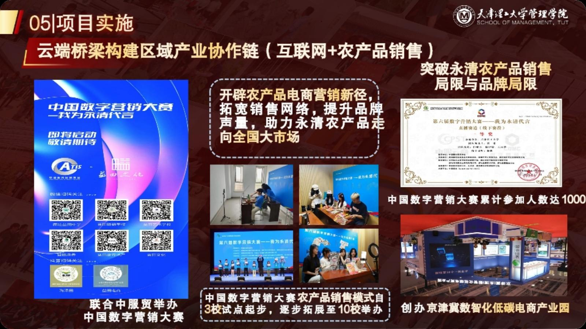
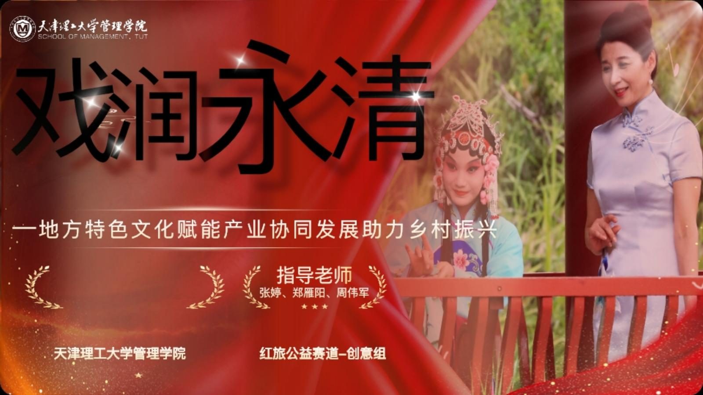
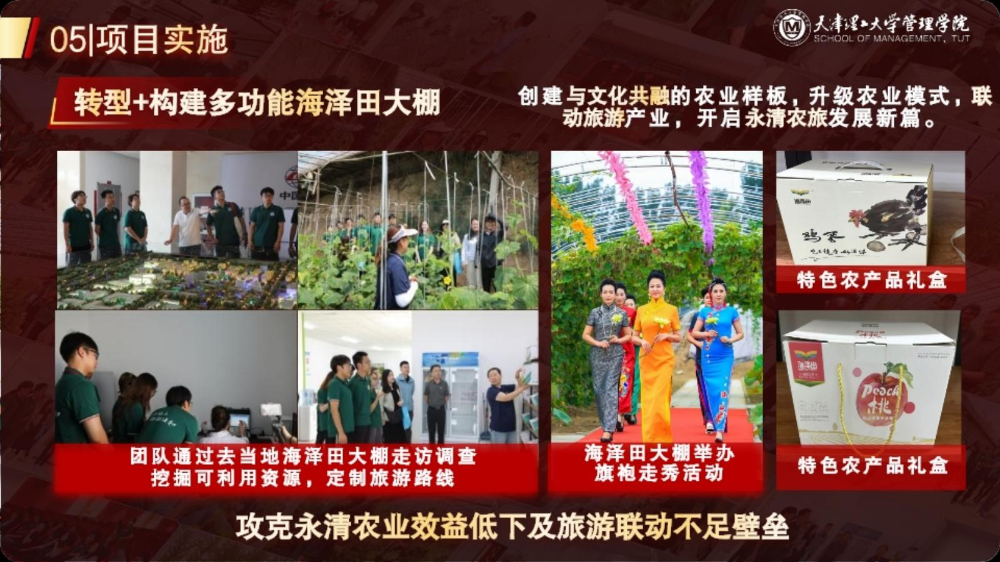
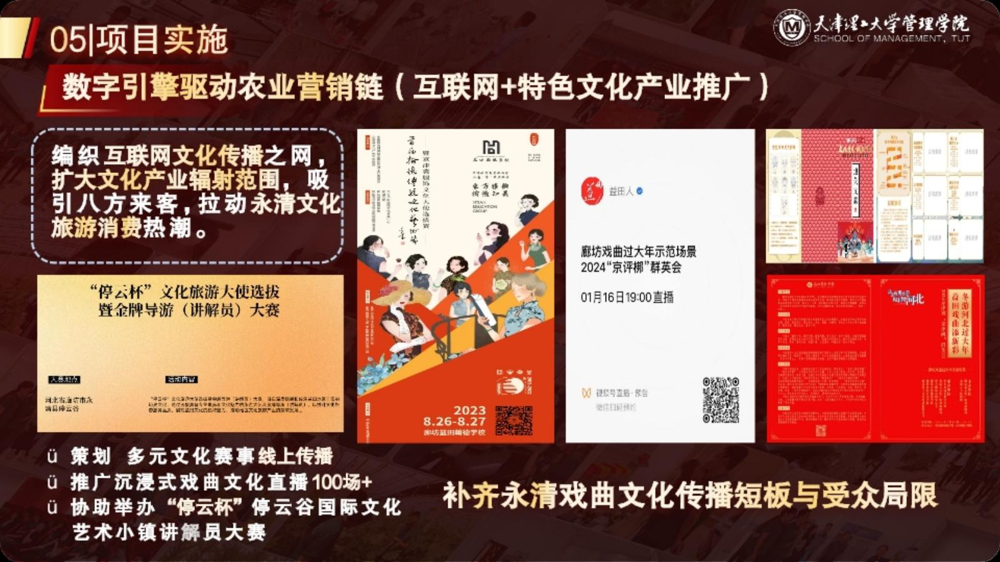
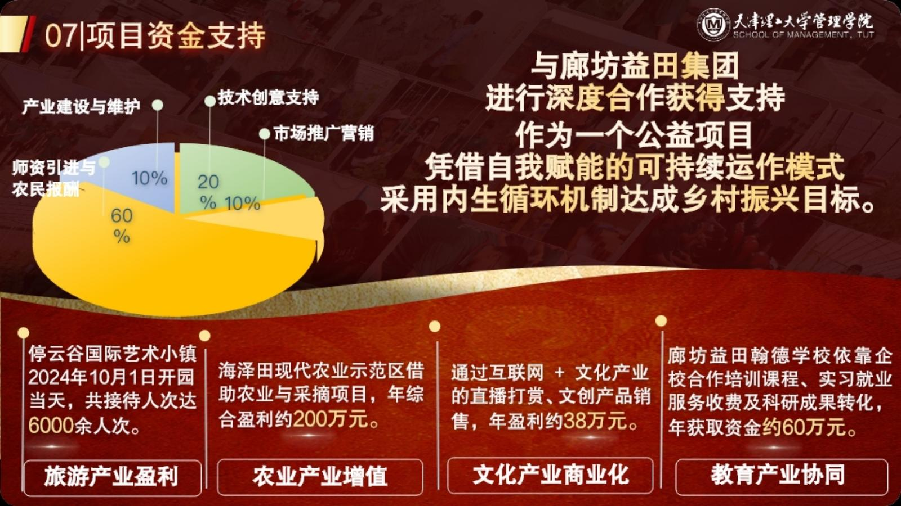
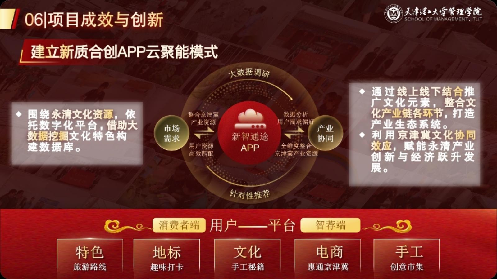
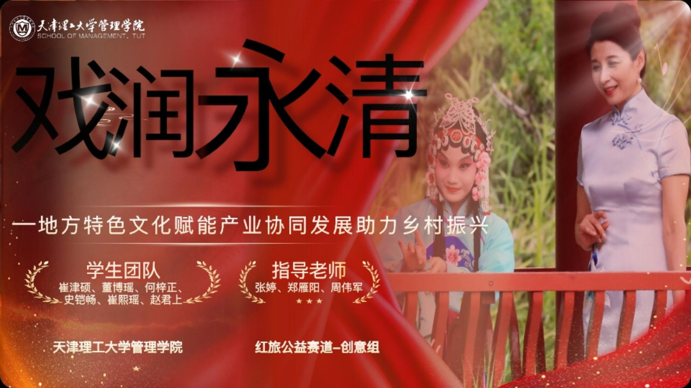

永清地方戏曲文化具备内容资产价值，但面临传播年轻化不足、产业协同弱和商业转化路径不清晰的问题。
NATIONAL INNOVATION PROJECT / CULTURAL TOURISM / RURAL REVITALIZATION
戏筑永清
文化赋能乡村振兴项目
以河北永清地方戏曲文化资源为核心，围绕“戏曲 IP + 农产品电商 + 文旅传播 + 产业协同”展开项目策划，尝试把地方文化资源转化为可持续的内容传播、文旅体验与产业发展方案。
国家级大创项目已结项
2024 - 2026大创项目文旅策划商业计划项目负责人

围绕戏曲 IP、短视频内容、电商直播、农产品销售和文旅活动，构建从文化传播到产业转化的完整方案。
项目以国家级大创结项为节点，沉淀了调研、策划、内容运营、路演表达和商业测算的综合实践能力。
BACKGROUND / SECTION 01
地方文化，需要被重新看见
戏曲不是静态的传统符号，而是可以被重新表达的地方文化资产。项目从永清戏曲文化切入，希望解决“文化有价值，但传播弱、转化难”的现实问题。
对于运营与内容策划而言，这个项目训练的是从资源识别、用户场景、传播内容到商业路径的完整拆解能力。

INSIGHT / SECTION 02
文化资源的难点，不只是传播
乡村振兴语境下，地方文化的价值不只在“被展示”，更在于能否形成用户愿意观看、参与、购买和复访的运营闭环。
传播断层
传统戏曲文化离年轻用户较远，需要更轻量、更视觉化的内容表达方式。
产业分散
文化、农产品、电商和文旅资源各自存在，但缺少统一的品牌叙事和协同路径。
转化不足
地方文化如果只停留在展示层面，很难形成可持续的流量、销售和产业收益。


STRATEGY / SECTION 03
用戏曲 IP 串联内容、产品与文旅
项目不把戏曲当作单一文化展示，而是把它转化为可以持续生产内容、连接农产品销售和承载文旅体验的 IP 中心。

地方戏曲资源戏曲 IP 视觉化短视频内容矩阵农产品电商转化文旅体验设计产业协同发展
EXECUTION / SECTION 04
从调研到落地的项目链路
项目执行围绕“先理解资源，再设计传播，再验证转化”的路径推进。内容传播、电商销售、政企协同和路演表达共同构成项目落地能力。
项目调研
梳理永清戏曲文化资源、农产品资源和乡村振兴场景。
内容传播
通过短视频和账号内容，把传统文化转译成年轻人更容易理解的表达。
电商转化
把内容流量导入农产品直播和销售场景，探索文化带货路径。
协同推进
连接企业、政府部门和投资人关注，提升项目外部可行性。

MATERIAL / SECTION 05
把“戏润永清”的项目材料补进案例
这部分补充新 PDF 中更鲜明的视觉页和阶段性展示材料，让项目不只停留在商业计划文本，而是呈现出更完整的策划、传播与成果表达。
UPDATED VISUAL SYSTEM
更鲜明的项目视觉与成果呈现
新材料强化了项目的展示感和传播识别度，适合用于卡片封面、项目主视觉和案例内容页，帮助 HR 更快理解这是一个已经完成并沉淀成果的国家级大创项目。
国家级结项项目展示视觉更新成果沉淀

OUTCOME / SECTION 06
国家级大创结项，不止完成一份计划书
项目最重要的成果不是 PPT 或商业计划文本，而是在真实项目推进中沉淀的数据、合作、传播和商业化验证。
BUSINESS / SECTION 07
让文化项目具备商业解释力
作为商业计划项目，它不仅要讲清创意，还要回答资源从哪里来、用户为什么参与、产品如何转化、项目如何持续运营。
商业模式拆解财务测算渠道合作投资人沟通盈利路径设计
ROLE / SECTION 08
我在项目中负责什么
我在项目中承担项目负责人角色，重点参与项目方向梳理、内容传播设计、商业计划整合、路演表达和成果复盘。
项目统筹
推进调研、方案、材料和展示节奏，保证项目按节点结项。
内容策划
围绕戏曲文化和农产品场景设计更年轻化的传播表达。
商业计划
参与商业模式、实施路径和财务测算内容梳理。
路演表达
参与项目路演材料整理，把复杂方案讲成清晰故事。
数据复盘
通过播放、粉丝、销售和合作数据判断项目成效。
REVIEW / SECTION 09
项目复盘
这个项目让我更清楚地理解，运营与策划不是把想法写得漂亮，而是要让资源、用户、内容、渠道和转化形成真实链路。国家级大创结项也意味着项目从概念进入了可被验证、可被展示的阶段。
继续优化方向
- 补充更系统的用户调研与游客画像。
- 将传播数据拆解为曝光、互动、涨粉和转化指标。
- 细化短视频矩阵和直播选品策略。
- 把政企合作路径转化为更明确的落地排期。
把地方文化讲成用户愿意参与的内容，把乡村资源转化为可持续的运营项目。